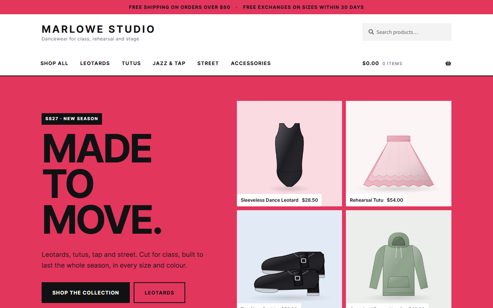
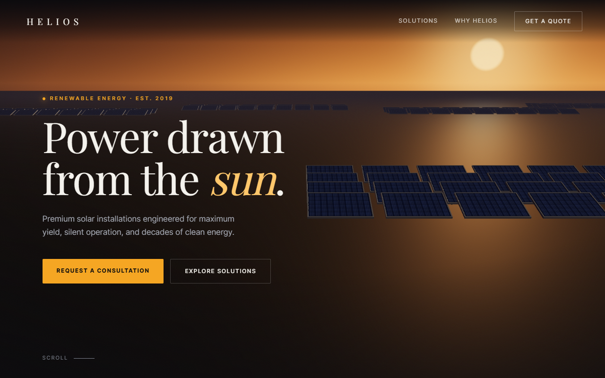
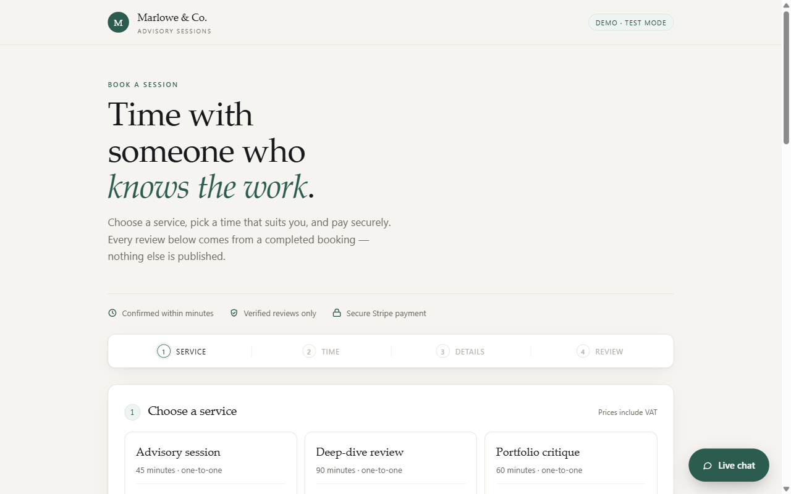
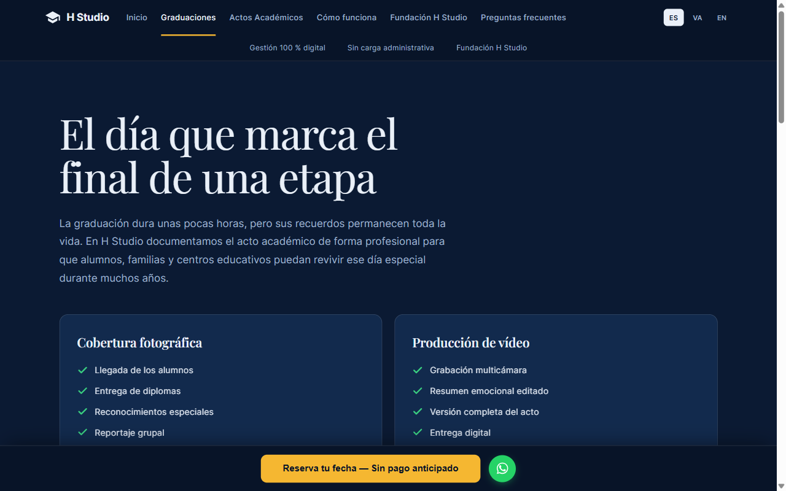
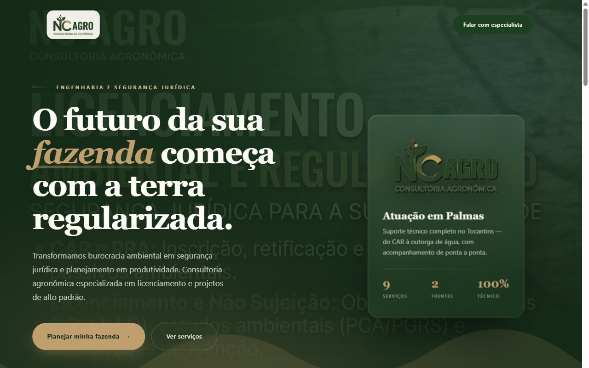
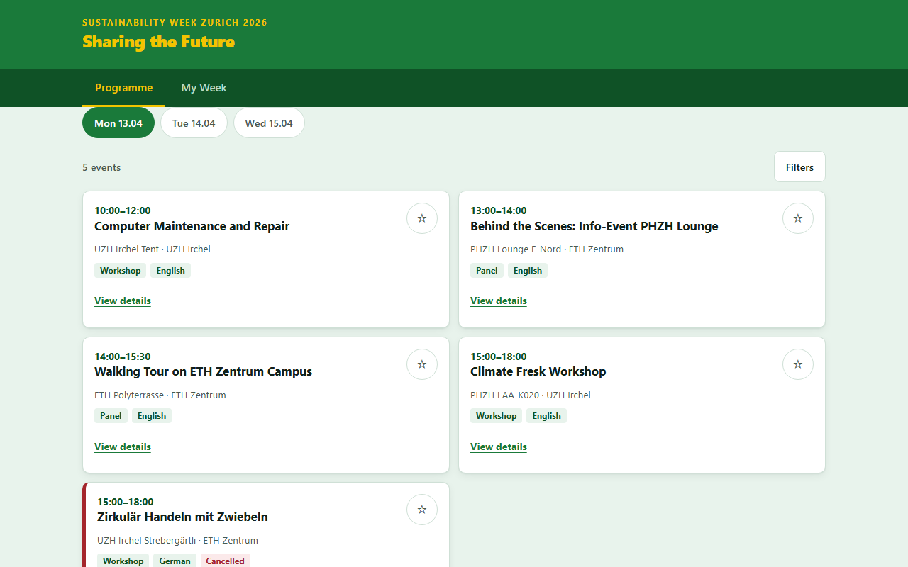
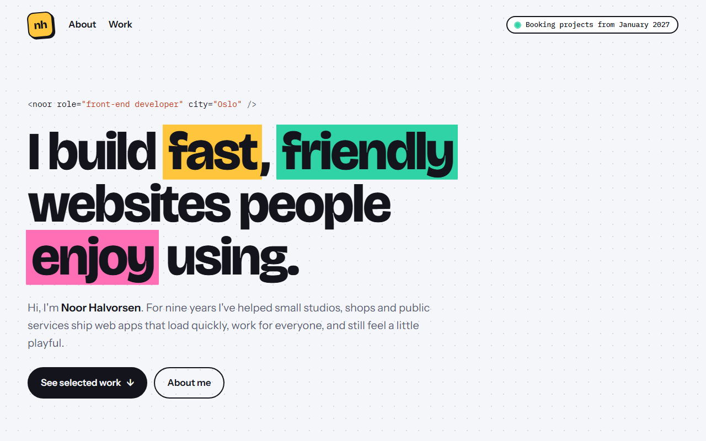
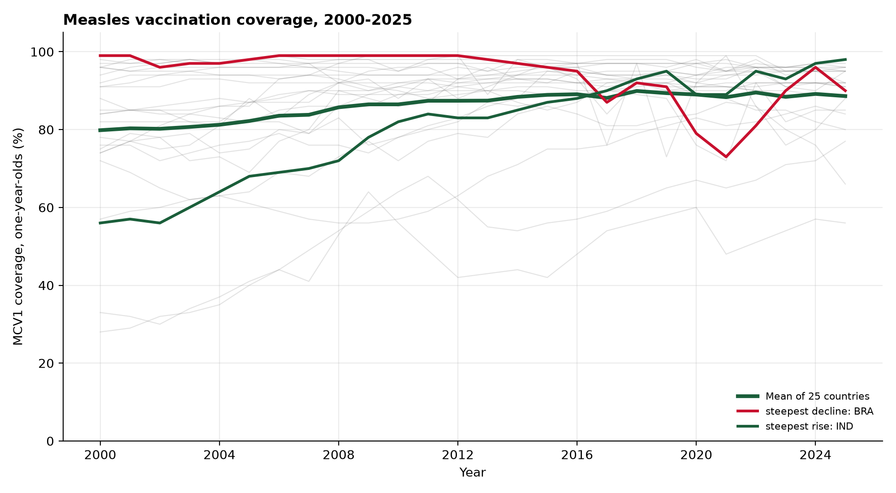

Duas prateleiras de trabalho. Sete aplicações web construídas do zero — e-commerce, reservas, painel e 3D em WebGL. E análise de dados sobre indicadores de saúde pública, com métodos auditáveis e limites assumidos. Nada aqui é maquete: cada peça corre, processa e falha como a coisa real.
Sete aplicações completas, do frontend ao pagamento.

Loja completa com 20 produtos em 12 categorias, 79 variações de tamanho e cor, carrinho, checkout com transferência bancária e encomendas processadas de ponta a ponta.

Página de energia solar com cena 3D em tempo real ao pôr do sol. Painéis de 60 células nas proporções reais (1722 × 1134 mm), céu em shader que se reflete no vidro, câmara guiada pelo scroll e formulário de orçamento com validação.

Sistema de reservas com disponibilidade em tempo real, avaliações verificadas por identificador de reserva, moderação com chave de administração e conformidade GDPR.

Site público e painel de administração para fotografia escolar. Filtros, permissões por função e interface validada em três tamanhos de ecrã.

Site de consultoria agronômica em Palmas, TO. Hero em camadas com parallax e cartão 3D, licenciamento ambiental e projetos técnicos, e contacto direto por WhatsApp. Zero dependências externas.

Planner de eventos com filtros de campus, categoria e idioma, lista de guardados em localStorage e 16 verificações de aceitação automatizadas. O checklist entregue é o output de um script que corre em Chromium.

Portfólio fictício de desenvolvimento front-end. Título com destaques animados, grelha de projetos em blocos de cor com mini gráficos em SVG e CSS, tema claro e escuro automático e layout que passa de seis colunas a uma no telemóvel. Sem JavaScript.
Pipelines reprodutíveis, métodos declarados, limites assumidos.

25 países, 2000–2025, dados da OMS. Tendências por país com intervalos de confiança, regressão pooled com p < 0,001, e um R² de 0,174 reportado como achado — não como falha. Três scripts, reprodutibilidade verificada por regeneração completa.
Todos os projetos web são demonstrações conceptuais. As marcas, produtos, preços e dados de clientes são fictícios e foram criados para demonstrar implementação técnica. Nenhum representa um cliente real. O Helios é uma demonstração de execução — não é direção de arte original. A análise de dados usa fontes públicas da OMS (CC BY-NC-SA 3.0 IGO) e serve para demonstrar método, não para produzir conclusões sobre os países analisados.